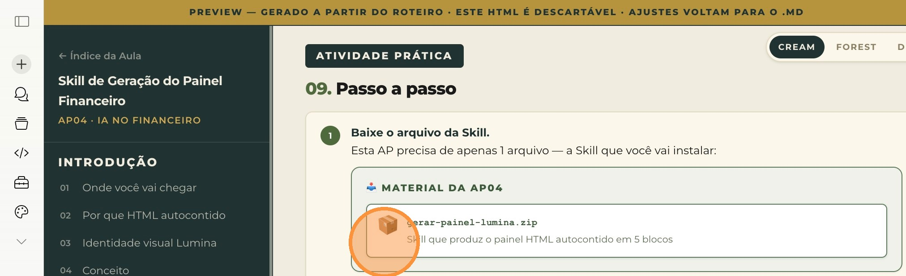
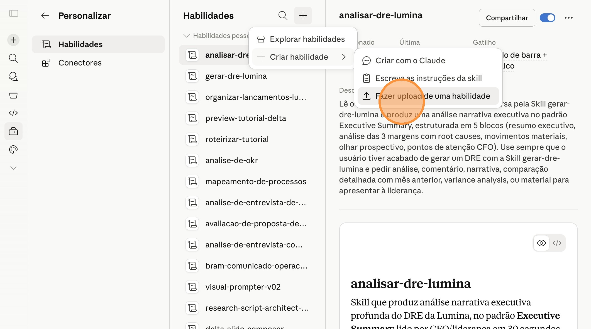
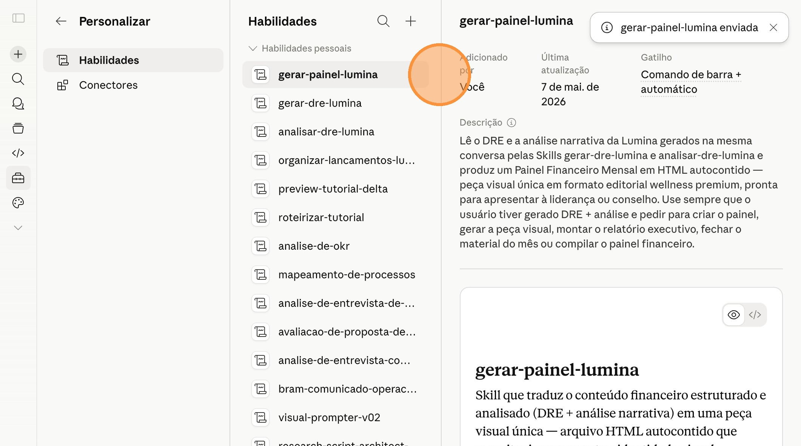
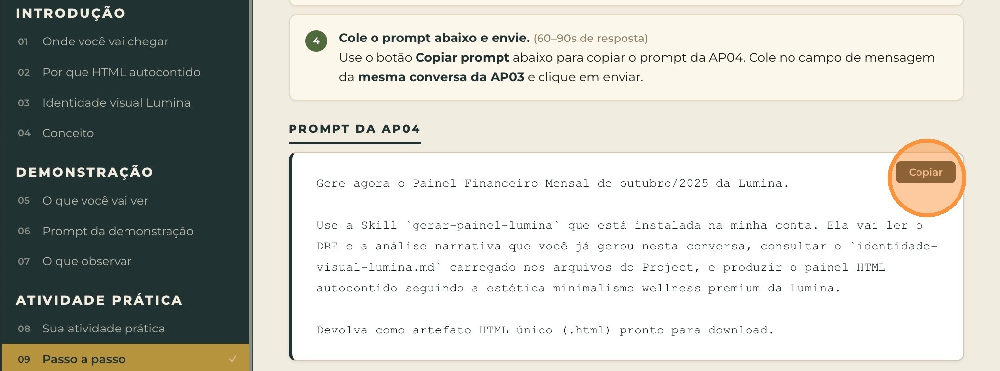
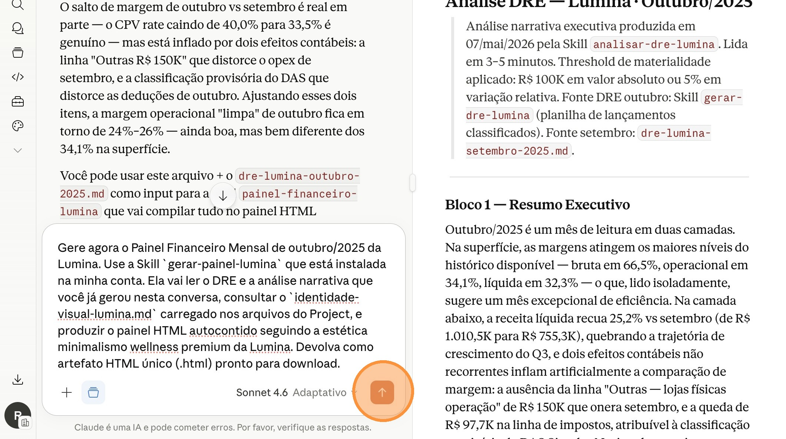
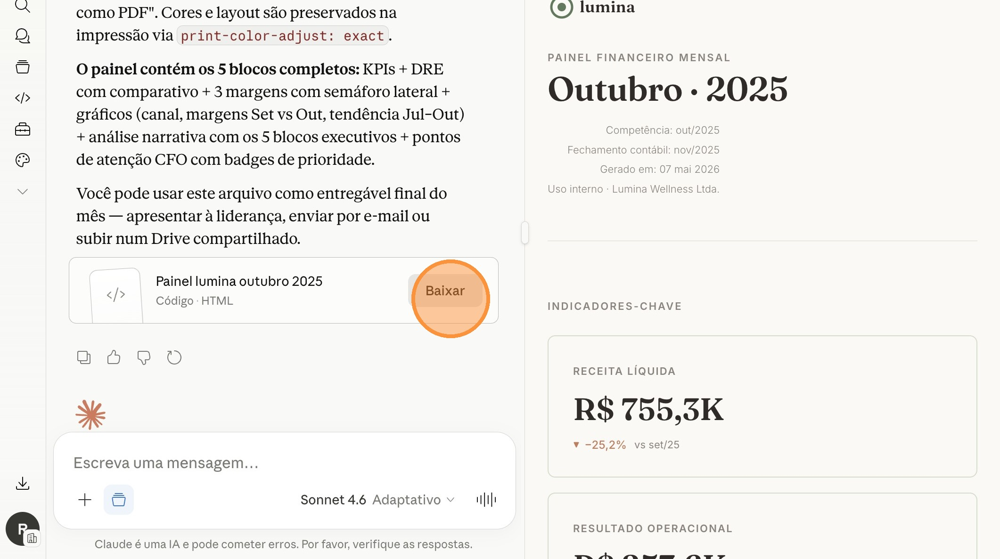

Ficha técnica
| Tipo | Introdução + Demonstração + Atividade Prática + Desafio |
| Duração | 12 minutos |
| Ferramenta | 1 Claude Skill (gerar-painel-lumina) acionada na mesma conversa da AP03 |
| Pré-requisito | AP03 concluída — DRE estruturado + análise narrativa gerados na conversa do Project (continuação direta dessa mesma conversa) |
| Entregável | Painel HTML autocontido painel-lumina-outubro-2025.html (~50 KB) |
Antes de começar, veja o que você vai conquistar ao final desta atividade prática — e como ela se conecta ao destino final da aula A10.
Entregável final da AP04: o Painel Financeiro Lumina · Outubro/2025 — um arquivo HTML único (~50 KB), autocontido, pronto para abrir no navegador, apresentar à liderança ou enviar para o conselho. Lido em 30 segundos.
O painel HTML que você vai gerar aqui é o entregável visual final do pipeline financeiro Lumina. É a peça de comunicação que sintetiza tudo o que você construiu nas APs anteriores num arquivo único, editável, print-friendly e mobile-responsive.
Tudo o que o pipeline produz desemboca aqui.
O painel é gerado como arquivo HTML único e autocontido — não como PDF, slides ou dashboard. 4 atributos tornam esse formato ideal para comunicação financeira executiva:
.html num editor de texto e ajusta um número ou trecho — não precisa rebuildar nada. Sem cadeia de ferramentas.@media print configurado. Você dá Ctrl+P (ou Cmd+P no Mac) e exporta como PDF perfeito — formatação preservada, quebras de página inteligentes.painel-lumina-outubro-2025.html, painel-lumina-novembro-2025.html… Histórico fica organizado naturalmente em qualquer pasta.Diferente das APs anteriores (onde o output era estrutural ou textual), aqui o output é uma peça visual. A Skill consulta o arquivo identidade-visual-lumina.md carregado no Project (lá na AP01) e aplica rigorosamente a estética minimalismo wellness premium da marca:
6 princípios visuais aplicados ao painel
- Espaço negativo é protagonista — nunca preencher mais de 60% da página
- Dados acima de ornamentos — números e gráficos são o foco, decoração é mínima
- Linhas finas, nunca grossas — 1px para divisores, sem bordas dramáticas
- Sem grade visível em tabelas — só linhas horizontais finas entre seções
- Hierarquia por espaçamento — não por cor ou tamanho extremo
- Sem sombras pesadas, sem gradientes — estética calma e contida
Até agora você usou Skills para somar e estruturar (AP02), gerar e analisar (AP03). A AP04 introduz uma quarta categoria de Skill: a Skill que traduz.
A Skill gerar-painel-lumina não inventa conteúdo novo — ela apenas pega o DRE e a análise narrativa que já estão na conversa e os organiza visualmente respeitando rigorosamente a identidade da marca. É uma operação de tradução, não de criação.
A Skill tradutora visual é como um designer editorial sênior de uma equipe financeira: ele não é o controller que faz os números, nem o analista que escreve a interpretação. Ele é quem pega tudo isso pronto e transforma em algo que a liderança consegue ler em 30 segundos sem perder profundidade.
O conteúdo intelectual já existe. O trabalho dele é tornar esse conteúdo visualmente acessível.
A demonstração a seguir é apenas para ilustração durante a aula expositiva. Você não precisa testar agora — você terá sua própria atividade prática logo depois desta seção.
O professor demonstra o fluxo completo da Skill gerar-painel-lumina em uma sequência linear de 6 passos — sem fases. A AP04 é a continuação direta da AP03 (mesma conversa do Project), então o fluxo é simples:
Fluxo completo da demonstração
O professor abre a página Customize > Skills e faz upload do arquivo gerar-painel-lumina.zip. Em seguida volta para a mesma conversa da AP03 (onde DRE e análise narrativa já estão) e envia uma frase curta acionando a Skill:
"Gere agora o painel financeiro de outubro/2025."
A Skill consulta o identidade-visual-lumina.md carregado no Project, lê o DRE e a análise da conversa, e produz o painel HTML. Em ~60 segundos, devolve 1 output: arquivo HTML autocontido com botão de download.
O DRE e a análise narrativa já estão na conversa graças ao encadeamento da AP03. A identidade visual já está nos arquivos do Project graças à AP01. A Skill tem todo o contexto que precisa — você só precisa pedir o painel.
Este é o prompt que o professor usa para acionar a Skill na demonstração:
- O painel respeita rigorosamente a paleta wellness Lumina — branco quente como fundo, verde-musgo como cor estrutural, coral terroso para acentos. Sem cores fora dessa paleta.
- A tipografia está correta — Fraunces serifada nos títulos, Inter sans-serif no corpo. A combinação cria hierarquia natural sem precisar de cores agressivas ou tamanhos extremos.
- Os semáforos das 3 margens funcionam — verde para margem que melhorou (≥ +0,5 p.p.), dourado champagne para estável (entre -0,5 e +0,5 p.p.), coral para que piorou (≤ -0,5 p.p.). Indicadores discretos, alinhados ao princípio de minimalismo.
- Print-friendly funciona perfeitamente — abra o arquivo no navegador, dê
Ctrl+P(ouCmd+P) e gere um PDF: formatação preservada, quebras de página inteligentes, cores corretas no impresso. - O arquivo é totalmente autocontido — abra com
Ctrl+Upara ver o código fonte: CSS inline, logo SVG inline, sem links para arquivos externos (exceção: Google Fonts CDN). Funciona offline depois de aberto uma vez.
Você vai instalar agora a Skill gerar-painel-lumina na sua conta Claude e gerar o Painel Financeiro Lumina · Outubro/2025 a partir do DRE e da análise que você já gerou na AP03. Esta AP é uma sequência linear de 6 passos:
Você vai instalar a Skill via upload direto do .zip (zero mensagens), depois acionar a Skill com uma única mensagem curta na mesma conversa da AP03 (1 mensagem).
Total acumulado da aula: 5 de 6 mensagens previstas.
Você vai precisar de 1 arquivo baixado antes de interagir com o Claude. Depois você instala a Skill, volta para a mesma conversa da AP03 (não abra nova) e aciona a Skill com 1 mensagem curta.
Pré-requisito: a conversa da AP03 onde você gerou o DRE e a análise narrativa precisa estar acessível dentro do Project Financeiro Lumina. Se você fechou a aba, abra de novo — o histórico permanece.
Clique no card "gerar-painel-lumina.zip" no bloco Material da AP04 acima para baixar o pacote da Skill no seu computador. Não descompacte — o Claude precisa do ZIP intacto para instalar.

Passo 01 — Baixe o pacote da Skill (ZIP)
No menu Personalizar > Habilidades da sua conta Claude, clique no botão "Fazer upload de uma habilidade" e selecione o arquivo gerar-painel-lumina.zip baixado no Passo 01.

Skills" loading="lazy" />Passo 02 — Suba o ZIP em Skills
Na lista de Skills, confirme que gerar-painel-lumina aparece com status Instalada / Ativada. Você deve ter agora 4 Skills no total instaladas (somando as 3 das APs anteriores).

Passo 03 — Skill instalada e ativada na sua conta
No bloco do Prompt da AP04 abaixo, clique no botão "Copiar prompt". O texto vai para a área de transferência.

Passo 04 — Copie o prompt
Não abra um novo chat. Não inicie uma nova conversa no Project. Reabra a conversa da AP03 onde o DRE e a análise narrativa já estão visíveis no histórico. A Skill gerar-painel-lumina precisa ler esses conteúdos — se você abrir nova conversa, eles não estarão acessíveis e o painel não será gerado.
Volte para a conversa da AP03 (mesma onde DRE e análise já estão). Cole o prompt no campo de mensagem (Cmd+V no Mac ou Ctrl+V no Windows) e clique no ícone de Enviar.

Passo 05 — Cole na mesma conversa AP03 e envie (1 mensagem)
Cerca de 60 a 90 segundos para o Claude consultar a identidade visual + DRE + análise e renderizar o painel HTML.
Clique em "Baixar" no artefato painel-lumina-outubro-2025.html (~50 KB). Localize o arquivo na sua pasta de Downloads e abra clicando duas vezes — ele vai abrir no navegador padrão. Confira os 5 blocos renderizados:
- Bloco 1: cabeçalho com logo + "Outubro · 2025"
- Bloco 2: 3 cards grandes com Receita Líquida, Resultado Operacional, Resultado Líquido
- Bloco 3: tabela DRE limpa com comparativo set/out
- Bloco 4: 3 cards de margem com semáforo visual (verde/dourado/coral)
- Bloco 5: análise narrativa nos 5 blocos em tipografia editorial

Passo 06 — Painel renderizado com identidade visual Lumina
Com o painel aberto no navegador, dê Ctrl+P (Windows/Linux) ou Cmd+P (Mac) e selecione "Salvar como PDF" no destino. O PDF mantém a formatação visual perfeita — pronto para enviar por email ou subir num Drive compartilhado.
Você sai desta atividade com
- A Skill
gerar-painel-luminainstalada permanentemente na sua conta Claude — pronta para gerar o painel de qualquer mês futuro. - O Painel Financeiro Lumina · Outubro/2025 em HTML autocontido (~50 KB) salvo no seu computador.
- Um arquivo que pode ser aberto em qualquer navegador, em qualquer dispositivo, sem precisar de internet (depois de carregado uma vez).
- A capacidade de exportar como PDF via Ctrl+P quando quiser — formatação preservada.
- 4 Skills encadeadas rodando no Project Financeiro Lumina — você cobriu todo o pipeline manual de fechamento mensal.
Na próxima atividade prática você vai automatizar todo esse pipeline via Tarefa Agendada do Cowork — uma única configuração que dispara as 4 Skills em sequência, todo mês, sem você precisar abrir o Claude.
É a etapa final do fechamento mensal verdadeiramente automatizado.
Agora que você tem o painel da Lumina funcionando, replique o processo para a realidade da sua empresa.
gerar-painel-[empresa] customizadaO que fazer:
- Baixe o prompt de geração da Skill (
prompt-gerar-skill-gerar-painel.md— disponível abaixo) — é o prompt que cria a Skill da Lumina, e que você vai customizar para a sua empresa. - Adapte o prompt trocando todas as menções à Lumina pelo perfil real da sua empresa — especialmente:
- Paleta de cores da sua marca (consulte seu manual de identidade visual)
- Tipografia oficial da sua marca — se não houver, use combinações neutras (Georgia + Inter, Playfair Display + Source Sans, Cormorant + Lato)
- Princípios de design alinhados ao estilo da sua marca (corporativo, tech minimalista, premium dourado, etc.)
- 3 indicadores principais que fazem sentido para o seu setor (varejo: GMV; SaaS: MRR/ARR; agência: billing/utilização)
- Envie o prompt adaptado ao Claude e gere a Skill
gerar-painel-[empresa]customizada. - Faça upload do
.zipgerado em Customize > Skills na sua conta. - Garanta que o Project Financeiro da sua empresa (criado no Desafio da AP01) tem o
identidade-visual-[empresa].mdcarregado. - Acione a Skill na conversa do Desafio da AP03 (onde DRE e análise da sua empresa já estão) e valide o painel HTML gerado.
Você já configurou o ambiente (AP01), eliminou o gargalo da classificação (AP02), tem o miolo do pipeline funcionando (AP03), e agora tem a peça visual final (AP04). Em 4 dias, você cobriu 80% do pipeline financeiro completo da sua empresa.
Faça este desafio em 4 dias — em 5 dias você tem o pipeline rodando com os dados reais da sua empresa.